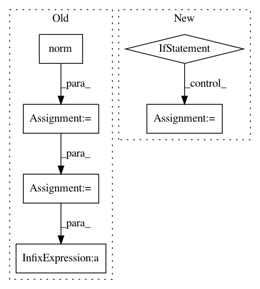

83579d7761d6bc995e1e6e90cd376191e648081e,ristretto/nmf/rnmf_fhals.py,,rnmf_fhals,#,23
Before Change
// Compute stopping condition.
if niter % 10 == 0 and verbose == True:
fit = np.log10(sci.linalg.norm(A - Wtemp.dot( Ht.T )))
if niter == 0: fitold = fit
fitchange = abs(fitold - fit)
fitold = fit
if verbose == True:
After Change
if niter >= 5:
// Compute stopping condition.
if niter == 5:
violation_init = violation
if violation_init == 0:
break
fitchange = violation / violation_init
if verbose == True:
print("Iteration: %s fit: %s, fitchange: %s" %(niter, violation, fitchange))
if fitchange <= tol:
break
fit.append(violation)
// Compute stopping condition.
// if niter % 10 == 0 and verbose == True:
// fit = np.log10(sci.linalg.norm(A - Wtemp.dot( Ht.T )))
//
// if niter == 0: fitold = fit
//
// fitchange = abs(fitold - fit)
// fitold = fit
//
// if verbose == True:
// print("Iteration: %s fit: %s, fitchange: %s" %(niter, fit, fitchange))
// //End if
//
// if niter > 1 and (fit <= -5 or fitchange <= tol):
// break
//End if
//End if
//End for
//~~~~~~~~~~~~~~~~~~~~~~~~~~~~~~~~~~~~~~~~~~~~~~~~~~~~~~~~~~~~~~~~~~~~~~~~~~
// Return factor matrices
//~~~~~~~~~~~~~~~~~~~~~~~~~~~~~~~~~~~~~~~~~~~~~~~~~~~~~~~~~~~~~~~~~~~~~~~~~~
if verbose == True:
fit_final = sci.linalg.norm(A - (Q.T.dot(W)).dot( Ht.T))
print("Final Iteration: %s fit: %s" %(niter, fit_final))
In pattern: SUPERPATTERN
Frequency: 3
Non-data size: 6
Instances
Project Name: erichson/ristretto
Commit Name: 83579d7761d6bc995e1e6e90cd376191e648081e
Time: 2018-03-07
Author: Benli11@users.noreply.github.com
File Name: ristretto/nmf/rnmf_fhals.py
Class Name:
Method Name: rnmf_fhals
Project Name: carpedm20/ENAS-pytorch
Commit Name: f98bd2ec9d4289939ff6661d5a9c43ee7e8996f7
Time: 2018-03-11
Author: dukebw@mcmaster.ca
File Name: models/shared_rnn.py
Class Name: RNN
Method Name: forward
Project Name: tensorly/tensorly
Commit Name: 5f078112011a66a93432cb6d38c03935a10f382e
Time: 2020-07-10
Author: git@ameyer.me
File Name: tensorly/decomposition/candecomp_parafac.py
Class Name:
Method Name: non_negative_parafac